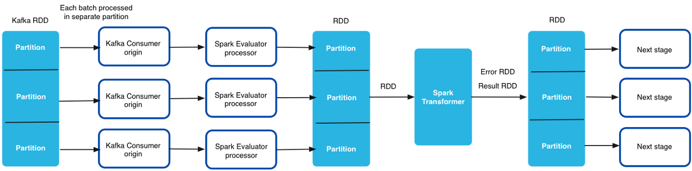

Spark Evaluator
The Spark Evaluator performs custom processing within a pipeline based on a Spark application that you develop.
The Spark Evaluator processor is especially useful when you need to perform heavy custom processing within a pipeline, such as image classification.
- Write the Spark application using Java or Scala. Then, package a JAR file containing the application.
- Install the application and its dependencies.
- Configure the Spark Evaluator processor to submit the Spark application.
When you configure the processor, you define the name of the custom Spark class that you developed and define the arguments to pass to the init method in the custom Spark class.
Spark Versions and Stage Libraries
The Spark Evaluator processor supports Spark versions 1.3 through 2.1.
-
Make sure the Spark version used in the selected stage library matches the Spark version used to build the application.
For example, if you use Spark 2.1 to build the application, use a Spark Evaluator provided in one of the Spark 2.1 stage libraries.
When using the processor in a cluster streaming pipeline, the Spark version in the selected stage library must also match the Spark version used by the cluster.
For example, if your cluster uses Spark 1.6, use a stage library that includes Spark 1.6.
The Spark Evaluator is available in several CDH and MapR stage libraries. To verify the Spark version that a stage library includes, see the CDH or MapR documentation. For more information about the stage libraries that include the Spark Evaluator, see Available Stage Libraries.
Standalone Pipelines
When used in a standalone pipeline, the Spark Evaluator processor starts a local Spark application. It passes a batch of data to the Spark application as a Resilient Distributed Dataset (RDD). The Spark application - or SparkContext - runs as long as the pipeline runs. The Spark application submits jobs to the StreamSets Spark Transformer API, processing the data and then returning the results and errors back to the pipeline for further processing.
When you use the Spark Evaluator in a standalone pipeline, define a parallelism value for the Spark Evaluator. The Spark application creates this number of partitions for each batch of records. The Spark Transformer processes each partition in parallel, and then returns the results and errors back to the pipeline.
Cluster Pipelines
You can use the Spark Evaluator processor in cluster pipelines that process data from a Kafka or MapR cluster in cluster streaming mode. You cannot use the processor in cluster pipelines that process data from a MapR cluster in cluster batch mode or from HDFS.
In a cluster pipeline, the cluster manager spawns a Data Collector worker for each topic partition in the Kafka or MapR cluster. Spark Streaming generates a batch for the pipeline every few seconds. Then each Data Collector worker processes the batches from a single partition.
Resilient Distributed Datasets (RDDs) are generated from data received across all of the Data Collector workers. The RDDs are then passed to the Spark Transformer running on the driver.
The RDD passed to the Spark Transformer points to data across the cluster. The Spark Transformer processes all of the data received across all Data Collector workers in the cluster, processing multiple batches at the same time. Data moves from one node to another only if your custom Spark code shuffles the data. The Spark Transformer returns the results and errors back to each Spark Evaluator processor running on the Data Collector workers. The Data Collector workers process the remaining pipeline stages in parallel.
The following image shows how the Spark Transformer processes data received across all workers in the cluster:

- Ensure that the Spark version you use to build the application matches the Spark version used by the cluster and the Spark Evaluator stage library.
- To maintain the states of the RDDs that are used more than once in the
application, use the RDD.checkpoint() or
RDD.cache() method in your custom Spark application. When
you checkpoint or cache the RDDs, the Spark Transformer can access the RDDs from
previous batches.
The Spark Evaluator processor cleans up checkpoints when the pipeline restarts or when the Spark application restarts. To maintain the state of each RDD between pipeline runs or between restarts of the Spark application, you must maintain the RDDs in an external store such as HDFS or HBase.
- When you configure the processor, do not define a parallelism value for the processor. The number of partitions defined in the Kafka Consumer origin determines the number of partitions used throughout the cluster pipeline.
- When you configure the processor, use constant values for init method arguments. In a cluster pipeline, the Spark Evaluator processor cannot evaluate Data Collector expressions in init method arguments.
- When you monitor the running pipeline, the record throughput for intervals less than 15 minutes might show an inaccurate count. To accurately monitor the throughput rate, evaluate the throughput for 15 minutes or more.
Developing the Spark Application
To develop a custom Spark application, you write the Spark application and then package a JAR file containing the application.
Use Java or Scala to write a custom Spark class that implements the StreamSets Spark Transformer API: https://github.com/streamsets/datacollector-plugin-api/tree/master/streamsets-datacollector-spark-api.
Include the following methods in the custom class:
- init
- Optional. The init method is called once when the pipeline starts to read arguments that you configure in the Spark Evaluator processor. Use the init method to make connections to external systems or to read configuration details or existing data from external systems.
- transform
- Required. The transform method is called for each batch of records that the pipeline processes. The Spark Evaluator processor passes a batch of data to the transform method as a Resilient Distributed Dataset (RDD). The method processes the data according to the custom code.
- destroy
- Optional. If you include an init method that makes connections to external systems, you should also include the destroy method to close the connections. The destroy method is called when the pipeline stops.
When you finish writing the custom Spark class, package a JAR file containing the Spark application. Compile against the same stage library version that you use for the Spark Evaluator processor. For example, if you are using the Spark Evaluator processor included in the stage library for the Cloudera CDH version 5.9 distribution of Hadoop, build the application against Spark integrated into Cloudera CDH version 5.9.
If you used Scala to write the custom Spark class, build the application so that it is compatible with Scala 2.10.
Installing the Application
Install the Spark application JAR file as an external library for Data Collector. If your custom Spark application depends on external libraries other than the streamsets-datacollector-api, streamsets-datacollector-spark-api, and spark-core libraries, install those libraries in the same location as well.
To install an external library for the Spark Evaluator, see Install External Libraries.
Configuring a Spark Evaluator
Configure a Spark Evaluator to process data based on a custom Spark application.
-
In the Properties panel, on the General tab, configure the
following properties:
General Property Description Name Stage name. Description Optional description. Stage Library Library version that you want to use. Required Fields 
Fields that must include data for the record to be passed into the stage. Tip: You might include fields that the stage uses.Records that do not include all required fields are processed based on the error handling configured for the pipeline.
Preconditions Conditions that must evaluate to TRUE to allow a record to enter the stage for processing. Click Add to create additional preconditions. Records that do not meet all preconditions are processed based on the error handling configured for the stage.
On Record Error Error record handling for the stage: - Discard - Discards the record.
- Send to Error - Sends the record to the pipeline for error handling.
- Stop Pipeline - Stops the pipeline. Not valid for cluster pipelines.
-
On the Spark tab, configure the following
properties:
Spark Property Description Parallelism For standalone mode, the number of partitions to create per batch of records. For example, if set to 4, then the Spark Transformer simultaneously runs 4 parallel jobs to process the batch. Set the value based on the number of available processors on the Data Collector machine.
Note: Not used when the processor is included in a cluster pipeline. The Spark Transformer uses the number of partitions defined in the Kafka Consumer or MapR Streams Consumer origin.Application Name For standalone mode, the name of the Spark application. Spark displays this application name in the log files. If you run pipelines that include multiple Spark Evaluator processors, be sure to use a unique application name for each to make debugging simpler.
Default is "SDC Spark App".Note: Not used when the processor is included in a cluster pipeline.Spark Transformer Class 
Fully qualified name of the custom Spark class that implements the StreamSets Spark Transformer API. Enter the class name using the following format: com.streamsets.spark.<custom class>
For example, let's assume that you developed a GetCreditCardType class that implemented the Spark Transformer API as follows:public class GetCreditCardType extends SparkTransformer implements Serializable { ... }Then you would enter the class name as follows:com.streamsets.spark.GetCreditCardType
Init Method Arguments Arguments to pass to the init method in the custom Spark class. Enter arguments as required by your custom Spark class. In standalone mode, enter a constant or an expression for the argument value. In cluster mode, enter constant values only. In a cluster pipeline, the Spark Evaluator processor cannot evaluate Data Collector expressions defined in init method arguments.
Using simple or bulk edit mode, click the Add icon to add additional arguments.